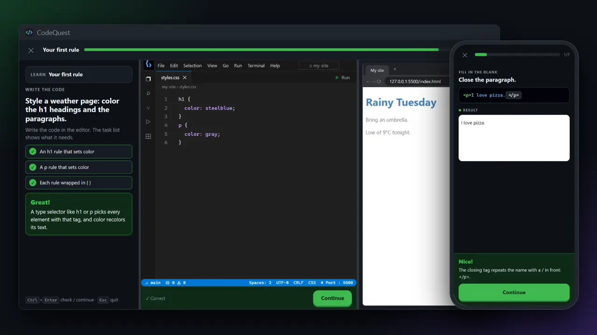

CodeQuest
A coding game with lessons short enough to fit between other things. You read one idea, then type it straight away, earning XP, streaks and badges. No account, no setup, works offline.
- Tracks
- 7
- Lessons
- 705
- Exercises
- 7,755
- Desktop challenges
- 1,410
- Seven tracks: HTML, CSS, C#, ASP.NET, Blazor, Docker and Ollama, each with unit bosses, a final exam and a certificate.
- The desktop edition is keyboard-first with a three-pane Instructions / Code / Output screen and guided tours of mock VS Code, Visual Studio, DevTools and Docker Desktop.
- Every exercise's answer is checked against the grader in the test suite, and scripted browser runs play each lesson, boss and exam end to end.
- Every push to main lints, typechecks, tests, builds the Android APK and Windows .exe, and publishes a release.
React 18 · TypeScript · Vite · Electron · Capacitor · Vitest · Playwright · GitHub Actions